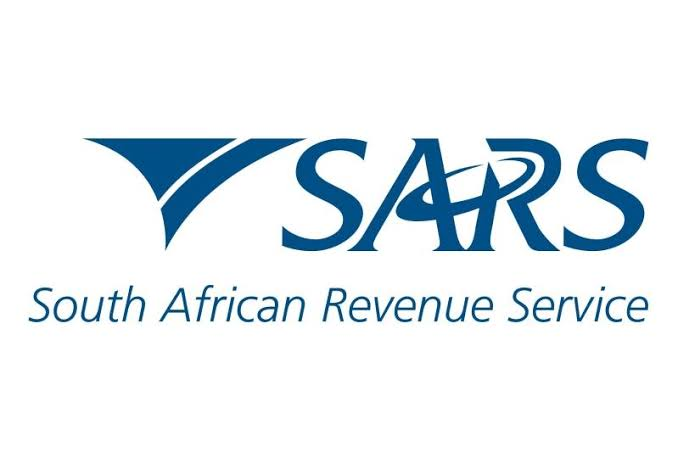

Your Community Digital Hub
Zok Internet Café is your one-stop destination for all digital and administrative needs in Thokoza. Conveniently located at Impilo Shopping Centre, we make technology accessible and affordable for everyone in our community.
Whether you need help with government services, professional document preparation, or simply reliable internet access, our friendly team is here to assist you.
View Our Services →
What We Offer
|
 Government Services SARS, SASSA & PSIRA |
Printing & Scanning Documents, IDs & Photos |
CV Typing & Internet Professional CVs & WiFi |
Operating Hours & Address
Address: Impilo Shopping Centre, Thokoza, Gauteng
Operating Hours:
- Monday – Friday: 08:00 – 17:00
- Saturday: 08:00 – 14:00
- Sunday & Public Holidays: Closed